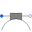

BrushModel considering voltage drop of carbon brushes |
Information
This information is part of the Modelica Standard Library maintained by the Modelica Association.
Model of voltage drop and losses of carbon brushes. For currents between -ILinear and ILinear
the voltage drop shows a linear behavior as depicted in Fig. 1.
For positive currents greater or equal than ILinear the voltage drop equals V.
For negative currents less or equal than -ILinear the voltage drop equals -V.
| Fig. 1: Model of voltage drop of carbon brushes |
Note:
The voltage drop v is the total voltage drop of all series connected brushes.
See also
If it is desired to neglect brush losses, set brushParameters.V = 0 (this is the default).
Parameters (2)
| useHeatPort |
Value: false Type: Boolean Description: =true, if heatPort is enabled |
|---|---|
| brushParameters |
Value: Type: BrushParameters Description: Brush loss parameters |
Connectors (3)
| p |
Type: PositivePin Description: Positive electrical pin |
|
|---|---|---|
| n |
Type: NegativePin Description: Negative electrical pin |
|
| heatPort |
Type: HeatPort_a Description: Optional port to which dissipated losses are transported in form of heat |
Components (1)
| brushParameters |
Type: BrushParameters Description: Brush loss parameters |
|---|
Used in Components (5)
|
Modelica.Electrical.Machines.BasicMachines.SynchronousInductionMachines Electrical excited synchronous induction machine with damper cage |
|
|  |
Modelica.Electrical.Machines.Losses.InductionMachines Model considering voltage drop of carbon brushes |
|
Modelica.Electrical.Machines.Interfaces Partial model for DC machine |
|
|
Modelica.Magnetic.FundamentalWave.BasicMachines.SynchronousInductionMachines Electrical excited synchronous machine with optional damper cage |
|
|
Modelica.Magnetic.QuasiStatic.FundamentalWave.BasicMachines.SynchronousMachines Electrical excited synchronous machine with optional damper cage |